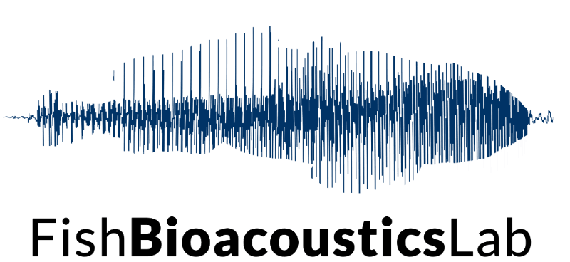

Collaborators & Institutions


Welcome to my website
Postdoctoral researcher in ecology & bioacoustics
I am a Postdoctoral Researcher working on aquatic ecosystems, anthropogenic noise pollution, and acoustic monitoring. I combine field-based methods with innovative tools to understand and protect biodiversity.
Discover our latest research updates, preprint releases, and event hosting
Our manuscript titled "Beyond the glass: testing visitor effects on the behavior of teleost fish in public aquaria" has been submitted to Animal Behaviour. This study investigates the behavioral responses of 13 teleost species to visitor density, direct human solicitations, and ambient acoustic changes.
Preprint: Read the full preprint version on bioRxiv:
https://doi.org/10.64898/2026.09.17.752300
I am proudly hosting the thematic session: « From bioacoustics to ecoacoustics for biodiversity monitoring and conservation » alongside esteemed colleagues at the upcoming congress in Zaragoza, Spain.
Event Dates: September 20–24, 2027
Abstract Submission Deadline: November 16, 2026 (14:00 UTC+1)
